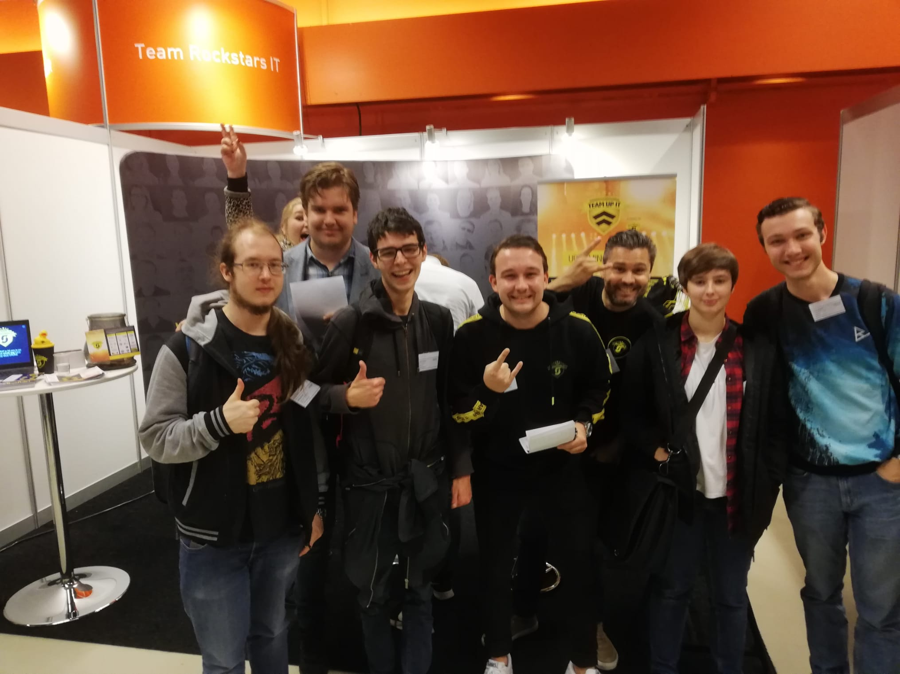

Tom Walhout
Beroepsbeeld
HBO-I Job Event
Op 4 oktober in de Jaarbeurs in Utrecht vond het HBO-I Job Event plaats. Er stonden een groot aantal bedrijven met een stand uitgestald in een grote zaal. Zo konden we bij elk bedrijf kijken en luisteren naar wat zij met IT te maken hebben. Voorbeelden van bedrijven zijn:
- Betabit
- Capgemini
- Team Rockstars IT
- Cegeka
- Achmea
Er waren een aantal functies en beroepen die het vaakst genoemd werden. Dit waren:
- Systeembeheerder
- Applicatiebeheerder
- Consultancy
- Recruiter
- Manager
Vooral systeem- en applicatiebeheerder spreken mij hiervan aan.
Bedrijvensafari
Op 9 oktober gingen we met zijn allen richting Zierikzee, waar we op Bedrijvensafari gingen. We gingen langs bij drie bedrijven.
Mijn favouriet die dag was Syntess. Hier hing een fijne sfeer voor mijn gevoel. Ook zou ik het wel zien zitten om te werken aan hun product, omdat ik verwacht dat dit mij veel leert en leuk is om te doen.
Ook YourSurprise vond ik interessant. Hier draag je echt bij aan iets persoonlijks.
O'moda vond ik de minste van de drie. Hier voelde het alsof er aan ons als ICT-ers bijna geen aandacht besteed kon worden.